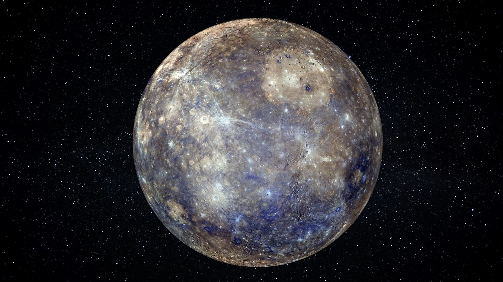

Mercury

The closest planet to the Sun with extreme temperature swings and a cratered, Moon-like surface.
- Average distance from Sun: ~58 million km
- Day length: 59 Earth days • Year length: 88 Earth days